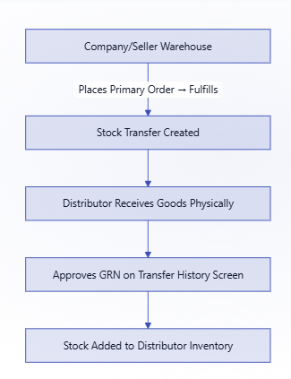

GRN sits at the receiving end of the DMS stock-transfer flow, stock leaves a warehouse, and isn't credited to the distributor's inventory until it's reviewed and approved on arrival.

Key concepts
| Term | What it means |
|---|---|
| Transfer History | List of all stock transfers sent to a distributor |
| GRN Pending | Transfer received but not yet acknowledged |
| GRN Approved | Stock confirmed received; inventory updated |
| Discarded Units | Units damaged or rejected during receipt |
GRN approval, step by step
Go to Transfer History
Filter by warehouse, date range and GRN status (Pending),
/inventories/transferhistory.Review SKU quantities
Check each pending transfer's quantities against what physically arrived.
Discard units if needed
Optionally discard damaged or short units with a reason: Discard, Damaged, No Required as Damaged, or Cancel Invoice. Add a comment if useful.
Submit approval
Stock is credited to the distributor's inventory.
NoteIf discarded units have an approval flow configured, the GRN enters a pending-approval state and must be reviewed by an approver before stock updates.
Portal status indicators
| Indicator | Meaning |
|---|---|
| 🟡 Yellow | Pending GRN, less than 10 days old |
| 🔴 Red | Pending GRN, more than 10 days old (overdue) |
| 🟠 Amber tick | Approved, with discarded units |
| 🟢 Green tick | Approved, no discards |
Was this guide helpful?